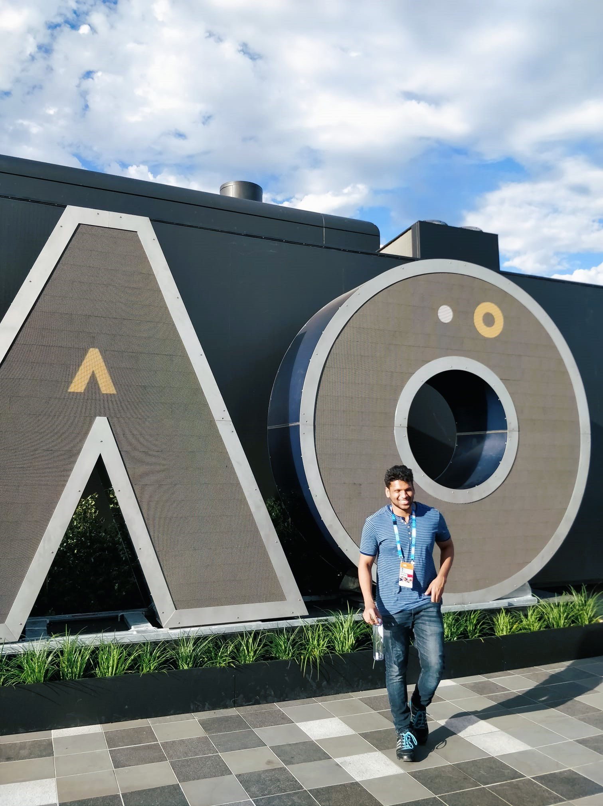

VR experience - Australian Open 2019
In partnership with Tennis Australia, Infosys has introduced an immersive experience for fans(VR experience - 2019 Australian Open), hosted within the Infosys Fan Zone.
I contributed to the design and development of a comprehensive VR offering allowed attendees to engage in three distinct activities: challenging renowned tennis players in a virtual rendition of Rod Laver Arena, enjoying live 360-degree streaming of the tournament, and exploring the Official AO Virtual Reality Store to shop for merchandise.
Developed using Unity, this multifaceted VR application was completed within an impressively short timeframe of just three months.
For the 360 streaming aspect, I served as a consultant to teams in India and Australia, facilitating the integration of live and video-on-demand tennis content into the VR experience.
